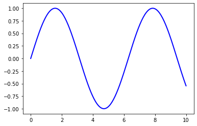

TEST ONLY#
This chapter is just for testing jupyter-book functionality.
Here’s my sentence and a sidenote1.
Here’s my sentence and a marginnote2.
1print("A code block with a caption and line numbers.")
2print("A code block with a caption and line numbers.")
3print("A code block with a caption and line numbers.")
1printf("A code block with a caption and line numbers.")
2printf("A code block with a caption and line numbers.")
3printf("A code block with a caption and line numbers.")
1int main()
2{
3 fprintf("Hello World C!\n");
4 return 0;
5}
1#include <iostream>
2using namespace std;
3int main()
4{
5 cout<<"Hello World C++|"<<endl;
6 return 0;
7}
1program main
2 implicit none
3
4 print*,'Hello World Fortran'
5end program main
This is a normal reST paragraph that contains several
This is a normal reST codeblock that contains several
First two tabs showing off defining a function.
def main():
print("Hello World Python!")
return
int main(const int argc, const char **argv) {
fprintf("Hello World C++!\n");
return 0;
}
program main
print*,'Hello World!'
end program main
Second two tabs showing off printing.
print("Hello World!")
#include <iostream>
int main() {
std::cout << "Hello World!" << std::endl;
}
note = "Python syntax highlighting"
print(note)
Python syntax highlighting
from myst_nb import glue
import sympy as sym
x, y = sym.symbols('x y')
z = sym.Function('z')
z = sym.sqrt(x**2+y**2)
glue("example_eq", z, display=False)
To glue a math equation try
(13)#\[\displaystyle \sqrt{x^{2} + y^{2}}\]
from myst_nb import glue
import matplotlib.pyplot as plt
import numpy as np
x = np.linspace(0, 10, 200)
y = np.sin(x)
fig, ax = plt.subplots()
ax.plot(x, y, 'b-', linewidth=2)
glue("glued_fig", fig, display=False)

This is an inline glue example of a figure: . This is an example of pasting a glued output as a block:
from myst_nb import glue
import numpy as np
import pandas as pd
ss = pd.Series(np.random.randn(4))
ns = pd.Series(np.random.randn(100))
glue("ss_mean", ss.mean())
glue("ns_mean", ns.mean(), display=False)
0.3017236534993262
Here is an example of how to glue numbers: 0.3017236534993262 and -0.15370524240737166.